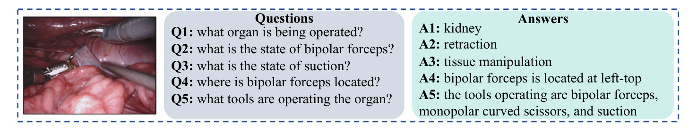
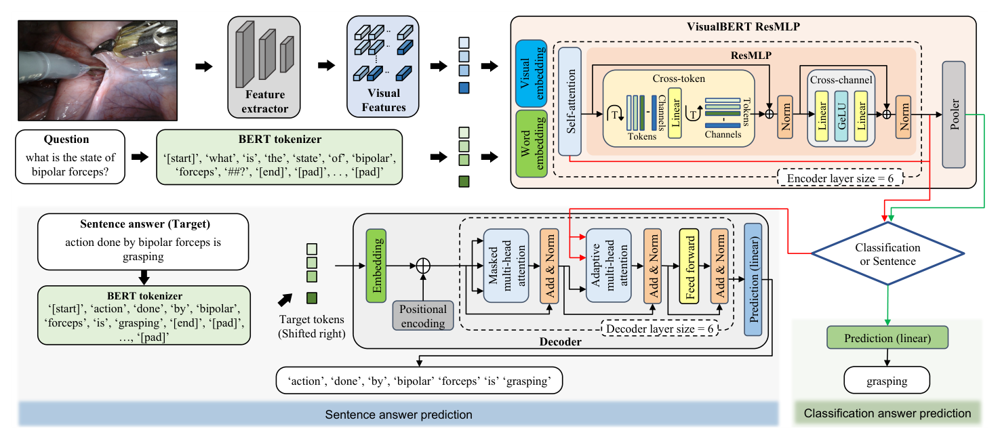
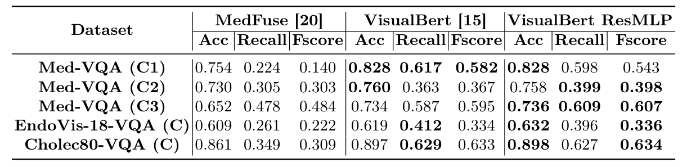
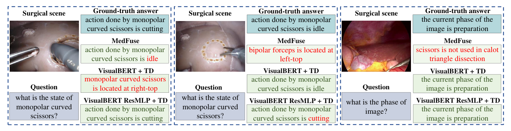
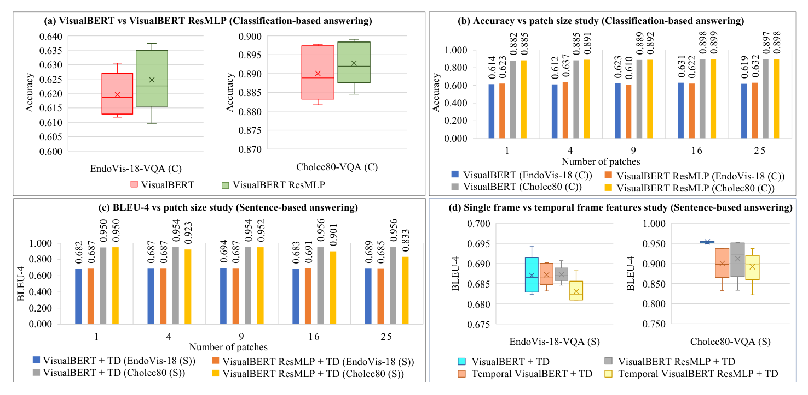

图文解读
1背景与动机
外科专家答疑的时间有限，学生的问题常常没人回答。 模拟器和手术录像能帮学生练手，但不会回答问题，答疑仍然压在专家身上。作者希望有一个系统能看懂手术画面、回答问题，作为专家之外的“第二意见”。
难点有两个。医学领域缺少大规模问答标注；医学专用词汇又让通用视觉问答模型难以直接迁移。医学视觉问答只有少量工作，手术场景基本是空白。
下一节先给出论文的整体答案，再逐步展开。
2核心观点速览
论文的做法是：不做新标注，把已有标注改写成问答，再用视觉-文本 Transformer 去答。
- 从 EndoVis-18 的 14 个肾切除序列和 Cholec80 的 40 个胆囊切除视频生成问答对，各有分类版和句子版。
- 用
ResNet18整图特征池化成若干图块作为视觉词元，不需要目标检测器。 - 在
VisualBERT每层自注意力后加跨词元和跨通道模块，参数从 184.2M 降到 159.0M。 - 编码器后接 6 层解码器，用束搜索逐词生成句子答案。
主要收益来自换成 Transformer，新编码器只在分类上带来很小的提升。 句子任务上它反而略差，时序特征也没有帮助。所有结论都建立在模板生成的简单问题上。
3数据是怎么来的
问题有多简单，决定了后面的分数该怎么读。 EndoVis-18-VQA 有 26 类答案：1 个器官、8 种器械、13 种器械交互、4 个器械位置。训练集是 11 个序列、1560 帧、9014 对，测试集是 3 个序列、447 帧、2769 对。
Cholec80-VQA 按 0.25 fps 采样 21591 帧，每帧两个问答对，有 14 类答案：8 个手术阶段、2 个器械状态、4 个器械数量。训练约 34k 对，测试约 9K 对。40 个视频怎样划入训练和测试，论文未说明。

问题模板的完整清单和每类问题的数量，论文未说明。从图中能看到的句子模板只有三种：器械动作、器械位置、当前阶段。
4模型怎么把画面和问题放在一起
手术数据没有目标检测标注，原版 VisualBERT 依赖的目标提议拿不到。 论文改用整图网格特征：对 ResNet18 最后卷积层做自适应平均池化，得到 $n^2$ 个视觉词元。问题由在本数据集上重新训练的 BERT 分词器切成词元。
两串词元一起进入 6 层编码器。每层先做自注意力，再做跨词元混合和跨通道变换：
$$X_{CT} = \mathrm{Norm}\left(X_{SA} + \left(A\left(X_{SA}^{T}\right)\right)^{T}\right)$$
$$X_{CC} = \mathrm{Norm}\left(X_{CT} + C\left(\mathrm{GeLU}\left(B\left(X_{CT}\right)\right)\right)\right)$$
第一个式子先转置，让线性层沿词元维混合，相当于每个通道对所有词元做一次固定权重的加权和。第二个式子是逐词元的两层前馈网络。线性层的输入维度等于词元个数，所以序列长度必须固定，具体长度论文未说明。

分类时池化输出接线性层；句子时编码器接 6 层解码器，训练用右移的目标答案，推理用束搜索。嵌入维度 300，隐藏层 2048。
5分类结果：好过基线，比原版只好一点
两个 Transformer 模型对基线 MedFuse 的优势很清楚，F 值差距尤其大。
| 数据集 | MedFuse 准确率 | 原版准确率 | 新版准确率 | 新版 F 值 |
|---|---|---|---|---|
| Med-VQA (C1) | 0.754 | 0.828 | 0.828 | 0.543 |
| EndoVis-18-VQA (C) | 0.609 | 0.619 | 0.632 | 0.336 |
| Cholec80-VQA (C) | 0.861 | 0.897 | 0.898 | 0.634 |
MedFuse 在 Cholec80 上的 F 值只有 0.309，说明它主要在高频类别上答对。新版对原版的差距在 Cholec80 上几乎为零，在 Med-VQA 的模态子集上 F 值还低于原版的 0.582。

三折检验中新版的准确率是 0.632、0.649、0.585，原版是 0.619、0.605、0.578，三折方向一致。但只有三折、没有方差和显著性检验，只能说明新版不低于原版。 参数量上新版少 13.64%。
6句子结果：分数很高，但要看模板
句子任务上 Transformer 与基线的差距更大，两种编码器的关系却倒过来了。
| 模型 | EndoVis-18 BLEU-4 | Cholec80 BLEU-4 | Cholec80 CIDEr |
|---|---|---|---|
| MedFuse | 0.165 | 0.333 | 1.250 |
| 原版加解码器 | 0.694 | 0.956 | 8.802 |
| 新版加解码器 | 0.691 | 0.952 | 8.759 |
作者推测，跨词元模块干扰了解码器所依赖的自注意力输出，这一点没有实验验证。新版加解码器为 184.7M，比原版加解码器的 209.8M 少 11.98%。

BLEU-4 达到 0.956 主要说明模型复现了模板。 槽位词答错只扣一个词的分，临床含义却可能完全相反。槽位词的准确率论文未说明，基线的句子版本如何实现也未说明。
7消融：图块数与时序特征

图块数取 1、4、9、16、25。分类准确率总体略升，例如 Cholec80 上新版从 0.885 升到 0.899，但 EndoVis-18 上并不单调。句子任务对图块数不敏感，作者称单个图块常常最好或接近最好。
时序实验换成 UCF101 预训练的 3D ResNet50，输入当前帧和前两帧，句子表现下降。这一实验同时改变了帧数、骨干和预训练数据，三者的影响没有分开。
8结果没有证明什么
- 新编码器稳定更好：差距与折间波动同量级，没有显著性检验。
- 模型能回答开放式手术问题：问题由模板生成，答案空间是 26 类和 14 类。
- 时序信息对手术问答无用：骨干和预训练域同时改变，无法分离。
- 系统可以作为可靠第二意见：没有外科医生参与评估，也没有错误代价分析。
9复现要注意什么
代码公开在论文给出的仓库中。问答模板、分词器训练语料、序列长度、注意力头数和束宽，论文都未说明，需要从代码确认。
三个数据集的学习率和训练轮数各不相同，例如 Cholec80 句子任务用 51 轮和 $1\times10^{-6}$。是否在测试集上调过这些设置，论文未说明。